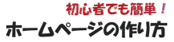
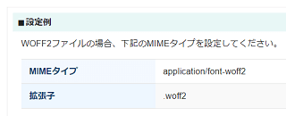

WEBフォントとは何ですか？
サイト上でオリジナルの美しいフォントを使いたい場合、画像に直接文字を書いてどのような閲覧環境でも同じように表示させるのが一般的です。サイトのロゴやタイトルバナーなどではこの方法がとられることが多く、Yahoo!やGoogle、あるいは企業サイトのロゴなどもたいていは画像で作成されています。
例えば、当サイトのロゴを画像にテキストで直接記入した場合はこのようになります。

けれども、このように画像で文字を表示させてしまうと、検索エンジンのクローラーには何が書いてあるのかが分からないため、SEO対策上のデメリットがあり、アクセスアップの面では不利と言われています。
このような場合、WEBフォントを使用すれば、サーバー上にアップロードした美しいフォントを「テキスト」のままで表示させることができるため、検索エンジン対策で有利といわれています。
例えば、「Noto」のWEBフォントで表示した場合はこのように表示されます。
ホームページの作り方
また、ロゴやタイトルだけでなく、コンテンツ部分の文章全体にもきれいなフォントで表示させることができます。
・「画像に直接記入」 → 画像なので検索エンジンが読めない
・「WEBフォント」 → テキストなので検索エンジンでも読める、SEO対策に有利
無料で使える日本語のWEBフォントはそれほど多くはありませんが、GoogleのNotoフォントは使いやすいため、ロゴなどに設定しておくとよいでしょう。
WEBフォントの使い方
このWEBフォントの使い方ですが、サーバー上に使いたいWEBフォントをアップロードしたのち、CSSに「@font-face」を設定して使用することができます。
→ @font-faceでWEBフォントの指定方法
サーバーにアップロードするWEBフォントについては、「Google Fonts」にて無料で利用できるさまざまなWEBフォントが公開されていますので、日本語を選択したのち、実際の表示を確認しながら探していくことをおすすめします。
特に、Googleの「Notoフォント」の人気が高く、ゴシック体の「Noto Sans JP」が使いやすいです。フォントをダウンロードして使用する文字をサブセット化で抜き出したのち、「.woff2」形式に変換してアップロードすることをおすすめします。
Google Fonts以外にも、ネット上には無料で利用できるフォントサービスが多数ありますので、著作権に注意しながら利用されるとよいでしょう。
■コンテンツ全体で使用する場合
ロゴなどの１部の文字列ではなく、コンテンツ全体で使用する場合、ページ内のすべての文字を抜き出してアップロードするのは困難なため、タグを設置して使用した方が簡単かもしれません。
ページが表示される際に一瞬の遅延が生じるデメリットもありますが、CSSに「@font-face」を設定する必要がなく、HTMLファイルに<link>タグを設置したのち、CSSにfont-familyを指定するだけで簡単に利用することができます。
WEBフォントの拡張子は「.woff」や「.woff2」
このWEBフォントを利用する際、一般的にはMozillaが中心となって開発したWOFF (Web Open Font Format) 形式のフォントを使用します。このWOFFファイルの拡張子は「.woff」です。
また、最近ではWOFFよりも圧縮率の高い「WOFF2」形式の「.woff2」に移行されつつあります。たいていのブラウザではほぼ対応しているため、今後はWOFF2形式をメインに使用することをおすすめします。
もしWOFF2が正常に表示されない場合、レンタルサーバーの管理画面にてMIMEタイプ（マイムタイプ）を設定しておくことをおすすめします。
例えば、当サイトのレンタルサーバーでは以下のような記載がありましたが、管理画面でMIMEタイムの設定ができない場合は.htaccessに直接記載すればよいと思います。

■.htaccessでの記述例
AddType application/font-woff2 .woff2
AddType application/font-woff .woff
一方、「.otf」や「.ttf」などのフォントファイルもありますが、これらは主にパソコンにインストールして使うフォントになります。
コントロールパネルで「フォント」の箇所を開くと、パソコンにインストールされている標準的なフォントの一覧を確認することができますが、プロパティを確認すると「.otf」や「.ttf」などの拡張子が付いています。
「OpenType」はマイクロソフトとアドビシステムズの共同開発によるもので、「TrueType」はアップルコンピュータの開発によるものです。また「.TTF」は単体ですが、「.TTC」は複数のフォントファイルが格納されたコレクションタイプといった違いがあります。
- OpenType フォント ファイル (.otf)
- TrueType フォント ファイル (.TTF)
- TrueType コレクション フォント ファイル (.TTC)
これらのフォントファイルに対し、「.woff」はフォントデータが圧縮されているため、ウェブ上で使用する際に読み込み時間が短縮されるなどのメリットがあります。
そのため、「.otf」や「.ttf」などを「.woff」や「.woff2」に変換したのち、サーバーにアップロードして使用することをおすすめします。WOFFコンバータなど、変換するための無料ツールがネット上で公開されていますので、それらを使用して変換するとよいでしょう。
日本語フォントのサブセット化でファイル容量を削減
上記のようにメリットが多いWEBフォントですが、日本語のサイトではあまり使用されていません。
英語はアルファベットのため、せいぜい26文字程度しかありませんが、日本語には漢字やひらがな、カタカナなどもあり、フォントのファイル容量が膨大になりがちです。そのため、日本語のサイトでWEBフォントを利用するには適していないと言われています。
例えば、Google Noto Fontsでは英語で「16MB」となっているのに対し、日本語は「115MB」程度もあるため容量がかなり大きいです。
転送量が大きくなることで読み込みの際に遅延が生じるデメリットがありますし、フォントの著作権によっては費用がかかるため日本ではあまり普及していません。
仮に、一般的なWEBサイトのデータ転送量を2,000KBとした場合、WEBフォントで使えるのは多くてもせいぜい1,000KBあたりまでと思います。
■サブセット化とは？
もし日本語のサイトでウェブフォントを利用する場合、必要なフォントのみを抜き出して使うと容量を削減することができます。全てが入ったフルセットのウェブフォントはファイル容量が大きいものの、サイト内で使用するフォントのみをのみを抜き出してサブセット化することにより、容量を削減することができます。
例えば、当サイトの「ホームページの作り方」のタイトル部分についても、この10文字のみを抜き出してサブセット化し、ファイル容量の削減に取り組んでおります。
ファイルの中身はこちらのサイトやFontCreatorなどのツールで確認できますが、デフォルトの格納文字はこのように数が多いです。
ここから必要な文字だけを抜き出してサブセット化して当サイトでは使用しています。
そのため、仮にサイト全体にWEBフォントを指定したとしても、この「ホ」や「ー」、「ム」などの10文字以外はブラウザのデフォルトのフォントで表示されることになります。
もしロゴなどの一部の箇所だけではなく、サイトのコンテンツ全体で使用する際には、ひらがなやカタカナ、常用漢字などの一式をサブセット化して使用されるとよいでしょう。
サイトのロゴについては太めの「Bold」などを使用し、コンテンツ内で使用する際は「Regular」などを選択するとよいかと思います。font-weight:400;が標準の「normal」に該当し、font-weight:700;が一般的な太字「bold」に該当します。
「Regular」を使用してCSSでfont-weight:bold;を指定してもブラウザ側で太字にしてはくれますが、太字にしたい箇所についてはweightの数値が大きいものをそのまま使用した方がきれいに表示されるはずです。
WEBフォントをサブセット化する方法
このサブセット化する際のツールはサブセットフォントメーカーが簡単でおすすめですが、パソコンにPythonをインストールしてfonttoolsのsubsetで抜き出すこともできます。ツールによって、ヒントやカーニング（文字間の調整）などの付属情報をカットするしないの違いがあるため、仕上がりには微妙な違いが出るかもしれません。
こちらはGoogle Fontsとの違いになりますが、一般的には配信元のGoogle Fontsを利用した方が一番きれいに表示されるかと思います。
上記のfonttoolsの場合、デフォルトで全ての情報が保持されるとの記載があるので、Python、fonttools、brotliをパソコンにインストールして、以下の画像のようにpyftsubsetのコマンドでサブセットするとキレイに表示されるかもしれません。
隠しファイルになっているかもしれませんが、「pyftsubset.exe」のある場所を探して指定して、「元のフォント」と「抜き出す文字のtxtファイル（--text-file="ほにゃらら.txt"）」、「woff2などの種類（--flavor=woff2）」、「アウトプットするファイル名や場所（--output-file="ほにゃらら.woff2"）」を指定してエンターを押せば出てくるはずです。
WEBフォントが出来上がりましたら、サイトにアップロードしてCSSに設定しておくとよいでしょう。
次のページ → @font-faceでWEBフォントの指定方法